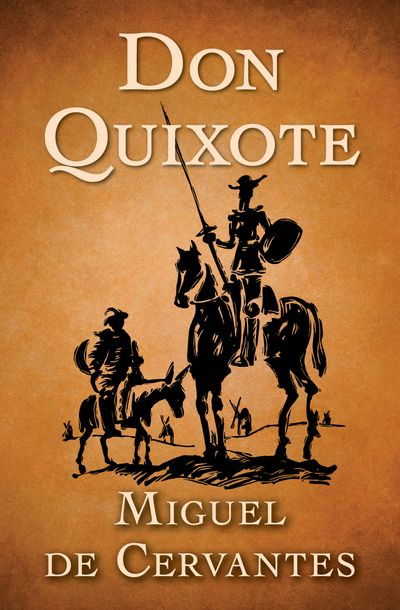

BOOK GALLERY

Name : The Lord of the Rings
Author : J.R.R. Tolkien
The Lord of the Rings is an epic high-fantasy novel by English author and scholar J. R. R. Tolkien. Set in
Middle-earth, intended to be Earth at some distant time in the past.the story began as a sequel to Tolkien's
1937 children's book The Hobbit.
Click here to read

Name : Harry Potter
Author : J.K Rowling
Harry Potter is a series of seven fantasy novels written by British author J. K. Rowling. The novels
chronicle the lives of a young wizard, Harry Potter, and his friends Hermione Granger and Ron Weasley
Click here to read

Name : Don Quixote
Author : Miguel De Cervantes
Don Quixote is a Spanish epic novel by Miguel de Cervantes. Originally published in two parts, in 1605 and
1615, its full title is The Ingenious Gentleman Don Quixote of La Mancha or, in Spanish, El ingenioso
hidalgo don Quijote de la Mancha.
Click here to read
Name : The Lion, the Witch,and the Wardrobe
Author : C. S. Lewis
The Lion, the Witch and the Wardrobe is a fantasy novel for children by C. S. Lewis, published by Geoffrey
Bles. It is the first published and best known of seven novels in The Chronicles of Narnia.it is also the
most widely held in libraries.
Click here to read

Name : Alice's Adventures in Wonderland
Author : Lewis Carroll
Alice's Adventures in Wonderland, widely beloved British children's book by Lewis Carroll, published in
1865. With its fantastical tales and riddles, it became one of the most popular works of English-language
fiction illustrated by British artist John Tenniel.
Click here to read
Name : The Adventures of Pinocchio
Author : C. Collodi
The Adventures of Pinocchio is a novel for children by Italian author Carlo Collodi, written in Pescia. It
is about the mischievous adventures of an animated marionette named Pinocchio and his father, a poor
woodcarver named Geppetto.
Click here
to read
Name : The Catcher in the Rye
Author : J.D. Salinger
The Catcher in the Rye is a novel by J. D. Salinger, partially published in serial form in 1945–1946 and as
a novel in 1951. It was originally intended for adults but is often read by adolescents for its themes of
angst, alienation, It has been translated widely.
Click here to read

Name : Anne of Green Gables
Author : L. M. Montgomery
Anne Shirley is a young orphan of eleven years who is mistakenly sent to the Cuthbert siblings' Green Gables
farm. The Cuthberts—who had sent for an orphan boy to help with the farm chores find Anne to be charming and
determined, and decide to let her stay.
Click here to read